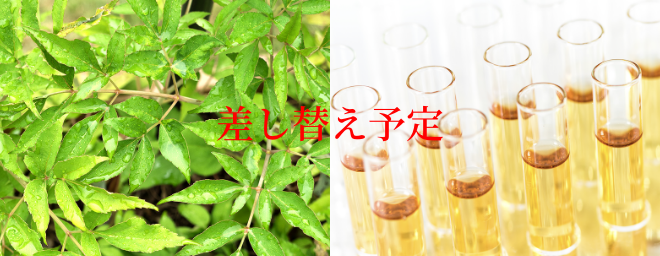
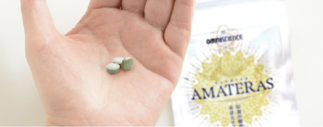
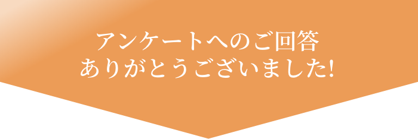

現代を生きる多忙なあなたに
健康に関するアンケート
(全4問、約50秒)


Question
-
貴方が最近感じる体の変化を
次の中から全てお選びください- 気力体力ともに減退、やる気が起きない
- いつも錆びついたような疲労が残っている
- ここぞというときに踏ん張りが効かない
- ぐっすり眠れず疲れが取れない
- お肌のくすみや髪のパサつきが気になる
- 女性・男性としての自信がなくなってきた
- ワクワクすることがなく気分が沈みがち
- 目の疲れが気になる
- お通じのリズムが乱れてきた
- 代謝が落ちてなかなか痩せない
- その他
-
ヒュウガトウキには豊富な栄養素がバランスよく含まれています。それら成分のうち、あなたが興味を持ったものを次の中から全てお選び下さい。
- 地球上でヒュウガトウキにしか含まれない『YN-1』という有機化合物は食後の活動をサポートすると言われており、現代人の乱れた食生活には欠かせない要素です
- 人間の体に必要な必須アミノ酸は人体で作り出すことができません。ヒュウガトウキはこの必須アミノ酸を９種類含んでいます
- 抗酸化作用を持つとされるクマリン・ポリアセチレンが含まれています
- 生命を維持するのに必要な栄養素がバランスよく含まれています
- 特になし
-
ヒュウガトウキには豊富な栄養素がバランスよく含まれています。それら成分のうち、あなたが興味を持ったものを次の中から全てお選び下さい。
- 国産100％・天然100％の葉っぱを食品にも使われる成分で固めただけのシンプルな処方であること
- 根の部分は平成14年に厚生労働省による医薬品の生薬リストにも加えられたが、代表的有効成分でるYN-1が葉にも大量に含まれていることがわかり、近年注目を集めていること
- 使用しているヒュウガトウキは契約農家で無農薬で栽培されたものであること
- 国内のGMP（Good Manufacturing Practice 「適正製造規範」）認定工場で製造された安心・安全なものであること
- 特になし
-
Omniscienceのアマテラスの由来・外観・形状についてあなたが感じた印象興味を持った点を次の中から全てお選びください。
- あまり
耳慣れない素材 なので試してみたい - 天孫降臨の地、高千穂山系で育つ「神の草」であること
- 篤姫の父島津斉彬公がその希少性から門外不出にしたこと
- 飲みやすく移動にも便利なタブレット状
- コンパクトで持ち運びしやすいアルミパウチ
- キャンディやスイーツのようにスタイリッシュなパッケージ
- 特になし
- あまり
